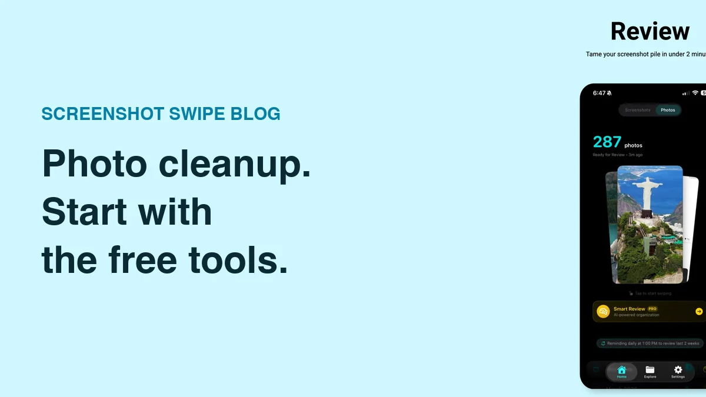

Best Free Photo Cleaner Apps for iPhone: What Is Actually Free?

Quick answer: Start with Apple Photos for free bulk deletion and its built-in duplicate collection. For screenshot review with notes and tags, try Screenshot Swipe’s free core features. Slidebox is another free download worth evaluating for album sorting, with paid options to check. Choose according to your cleanup job and verify any purchase terms.
You download a cleaner to remove fifty unwanted images, then meet a subscription screen before understanding what the app does. “Free” can describe the download, a limited feature set, or a trial. Those are different starting points for a cleanup session.
Disclosure: we make Screenshot Swipe. This comparison uses official Apple and developer sources, checked September 21, 2026. App ratings come from Apple’s US lookup API on that date. We have not measured cleanup speed or storage savings in a controlled test.
What should a free photo cleaner let you accomplish?
Define a small job before installing anything: remove yesterday’s accidental shots, file a holiday album, or review this week’s screenshots. Then check whether the app lets you finish that job under its free access. A download price of zero is only the beginning of that evaluation.
For this shortlist, Apple Photos is the built-in baseline, the screenshot app has a documented free core workflow, and Slidebox is a free-to-download sorting alternative with purchases. We have left trial-only offers out of the recommendations.
1. Apple Photos — best place to start without a download
Platform: built into iPhone · Price: included with the device. Optional iCloud storage is a separate purchase.
Photos handles manual selection and deletion, media-type collections, and albums. It also identifies duplicate photos and videos in a Duplicates collection when it finds them. Apple’s duplicate-merging instructions explain the built-in option.
Start here if you already know which images can go. You can assess the problem before granting another app library access. Its limitation for this comparison is the amount of manual browsing involved in deciding which unrelated screenshots are still useful.
2. Screenshot Swipe — best fit for screenshot keepers with context

The review queue supports keep-or-delete decisions before you organize the keepers.
Platform: iPhone and iPad App Store · Price: free core features, optional Pro · US rating: 5.0 out of 5 from 5 ratings.
The core workflow combines swipe review with manual notes, tags, reminders, and on-device text search. Pro adds AI Smart Review. This makes it a useful option when you want to keep a recipe or booking detail with the reason you saved it.
The small rating count deserves perspective beside more established apps. Evaluate it with a recent screenshot batch and check whether you can retrieve the useful items afterward. This recommendation is for screenshot review; it is not a claim that the app can solve every cause of low storage.
3. Slidebox — worth evaluating for album sorting

Slidebox places album choices beneath the image you are reviewing. Image: Slidebox.
Platform: iPhone and iPad App Store · Price: free download with in-app purchases · US rating: 4.8 out of 5 from 16,525 ratings.
Slidebox combines swipe-to-trash decisions with tap-to-album filing. Try it if your main goal is putting photos into a few existing categories. Its current listing advertises subscription and one-time purchase options, so inspect the limits and offer presented to you before treating it as an unlimited free solution.
Our Slidebox review includes a small evaluation checklist. Album organization is its strongest reason to enter this shortlist; start with that job when comparing it with the built-in tools.
How do the free options compare?
| Question | Screenshot Swipe | Apple Photos | Slidebox |
|---|---|---|---|
| Best starting job | Screenshot review | Manual cleanup | Album sorting |
| What is free? | Core review and organization | Built-in tools | Download; check feature limits |
| Paid option | Pro AI features | Optional iCloud storage | Subscriptions / one-time offer |
| First test | Review 20 screenshots | Select a small batch | File into two albums |
What should you check before deleting a large batch?
Review the selected images, especially records and pictures you cannot replace. With iCloud Photos, deletions affect the synced library. Apple provides a Recently Deleted recovery window, but permanently clearing it removes that fallback. Follow the screenshot-deletion guide for the full sequence.
Measure the result against your original problem. If you needed to find recipes, a smaller camera roll alone may leave that problem unresolved. Pair cleanup with a small labeling system for the items you keep.
What else should you know?
What is the best completely free starting point?
Apple Photos is the simplest starting point because its built-in cleanup tools are already on your iPhone. Try the relevant collection and a small manual cleanup first. If repeated browsing or filing becomes the obstacle, you will have a specific reason to evaluate another app’s free features.
Does free on the App Store mean no subscription?
No. It describes the download price. An app can also have in-app purchases, subscriptions, or a trial. Read the purchase screen and check whether you can finish your intended cleanup without accepting an offer. Keep the distinction between free core features and temporary access clear.
Can a cleaner guarantee how much storage I will recover?
Your result depends on the files you remove and how your library is stored. A screenshot batch and a set of long videos are very different jobs. Check your own storage before and after the cleanup, and avoid choosing an app solely because a promotional example shows a large saving.
Do I need an AI cleaner for screenshot cleanup?
You can review and delete screenshots manually with built-in tools or a swipe interface. AI assistance is an optional convenience to evaluate after you understand your own sorting decisions. Keep a confirmation step and check suggestions whenever a screenshot contains information you may still need.
How should you choose your first cleanup tool?
- Name the job: delete obvious rejects, sort albums, or organize saved screenshots.
- Try a small batch with built-in or free core features.
- Verify the keepers and review any purchase terms before expanding the session.
Clear the pile. Keep the useful details.
Screenshot Swipe is free to start. Swipe through screenshots, review your deletion choices, and add notes or tags to the keepers.
Download on theApp Store